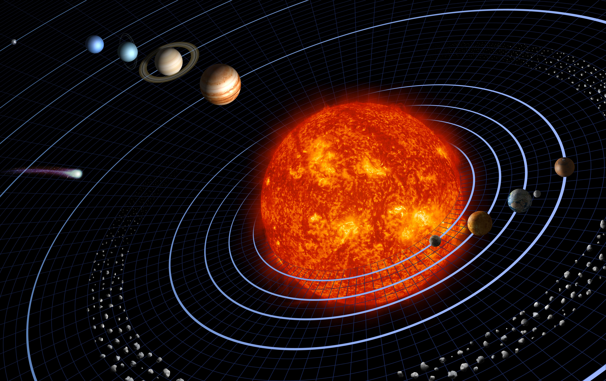
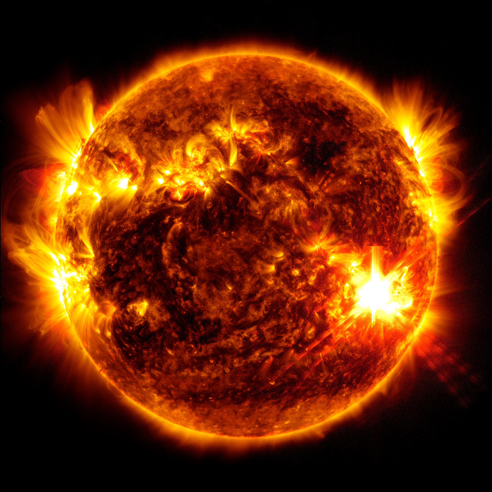
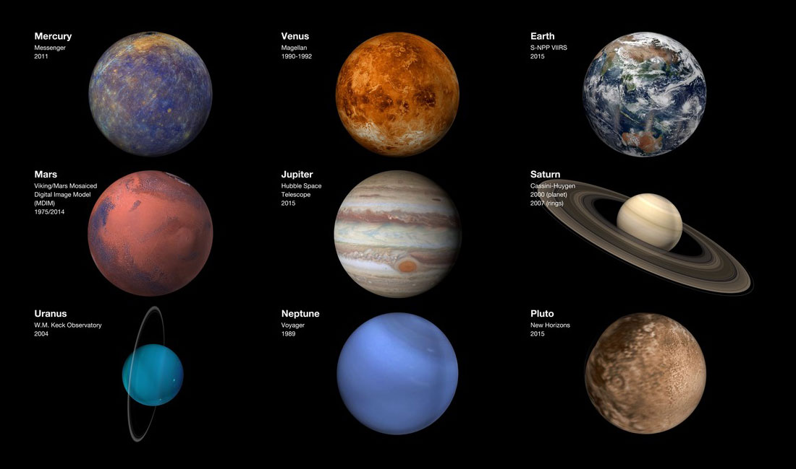
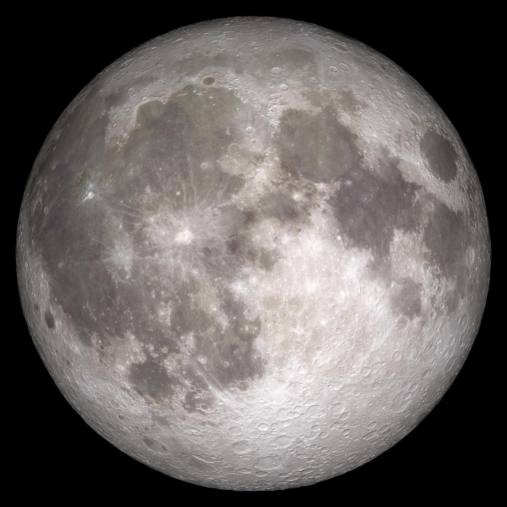
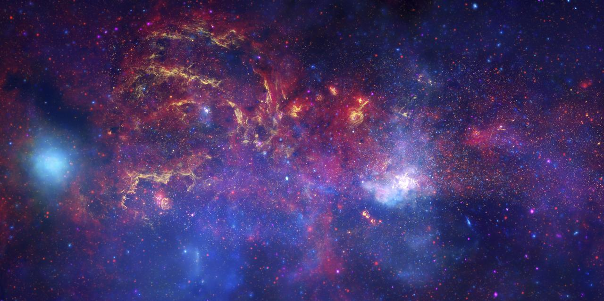
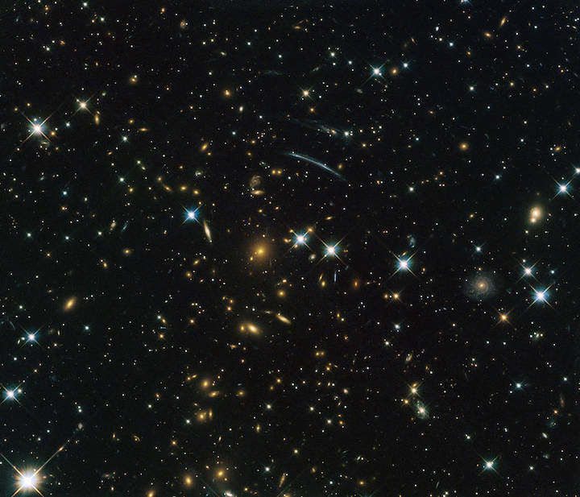
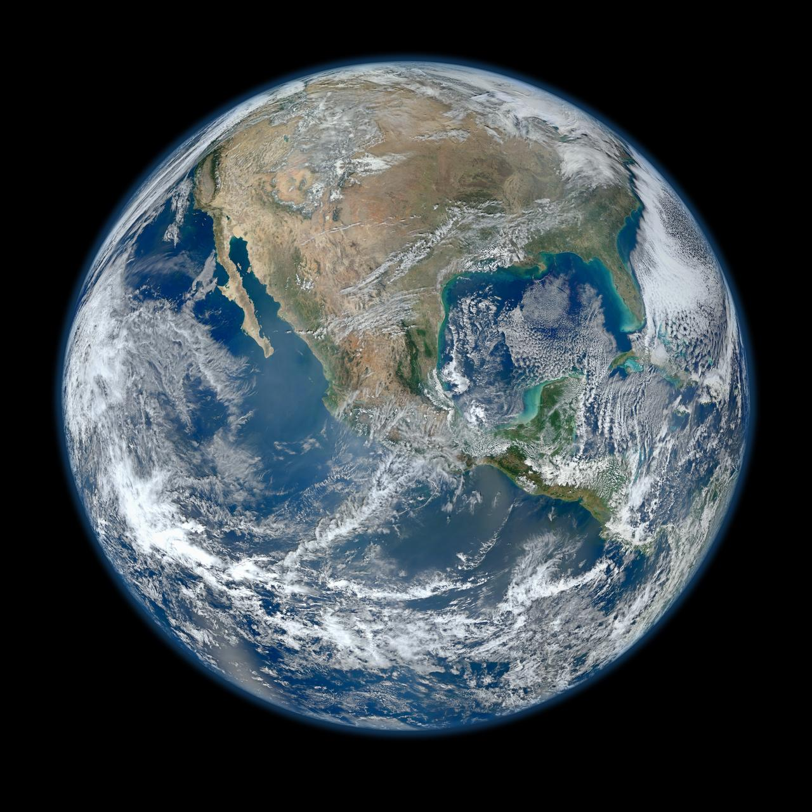
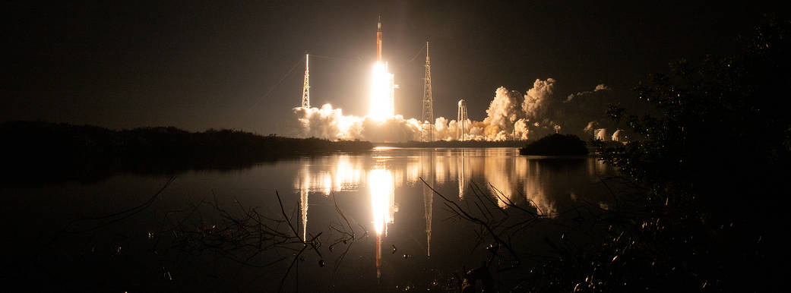

湖南支教 · 宇宙探索
把好奇心
发射到星空
5 节 40 分钟课程，从太阳系出发，到遥远宇宙和人类探索，每节课都有问题、学具、手工和积分任务。
任务地图
五天，五个宇宙任务
太阳系：介绍、八大行星与天体名字
从太阳、成员图、八大行星和基础天体分类开始。
太阳系：其他天体与月相
认识卫星、小行星、月球和月相变化。
遥远宇宙上：光年与系外行星
把镜头拉远，理解光年，再看科学家怎样找远方行星线索。
遥远宇宙下：恒星、黑洞与星座
讲星星一生、黑洞澄清、12 星座互动，并加入观测方法。
人类探索 + 未来小工具
认识探索人物与工具，再画一个能解决太空困难的小发明。
我们的目标不是背很多答案，而是学会提出更好的宇宙问题。
学完会什么
课程总览学习目标
了解旅程
知道五天分别学什么：太阳系、其他天体、遥远宇宙、恒星黑洞、人类探索。
认识规则
每课都有探究问题、动手学具和积分任务，大胆提问就能加积分。
做好准备
准备好一颗好奇心和一双爱观察的眼睛，比背定义更重要。
提出目标
你想在五天后学到的最酷的一件事是什么？先写下来，最后看看有没有实现。
小老师登场
先认识彼此，再飞向星空
我是谁
大家好！我叫李昱葳，今年 11 岁，在香港读书。今天我想和大家一起探索宇宙。
今天怎么学
我们不只是听课，也会猜一猜、动一动、画一画、做手工、讲故事。
课堂约定
大胆提问，尊重每个答案，材料公平分享。
积分规则
好问题、好合作、好展示都能加星星积分，课末可换贴纸、小玩具或小零食。
第 1 课
太阳系介绍
与八大行星
先认识太阳系这个“家”，再用图片和线索分清太阳、行星、卫星和更远处的天体名字。

第 1 课
太阳系介绍与八大行星 · 40 分钟
开场猜谜：名字 + 太空动作；猜“太阳系里谁最重要？”
你猜我话：看行星照片，用颜色、光环、大小线索猜名字。
探究故事：如果太阳请假一天，地球会先发生什么？
手工建图：把太阳、八大行星卡贴到成员图上，作品带回家。
彩泥行星：每人用彩泥捏一颗最喜欢的行星，带回家展览。
人体排序：小组拿行星卡排队，说理由，答对或好理由加积分。
出口票：写一个太阳系问题，交提问箱换 1 颗星星积分。
破冰游戏
先观察，再猜星球
- 准备 8 张行星图卡，背面写 3 条线索。
- 一人抽卡，不说名字，只读线索或做动作。
- 同组 30 秒内猜；猜不中再给一条“加码线索”。
- 猜对得 1 星；说出判断理由再加 1 星。
- 每轮结束把图卡贴到太阳系顺序图上。
学完会什么
第 1 课学习目标
认识成员
太阳系由太阳、八大行星、卫星、小行星和彗星等成员组成。
排出顺序
能用卡片排出八大行星，并说出至少一个判断线索。
理解太阳
知道太阳是恒星，给地球提供光和热，也决定太阳系中心。
提出问题
把“我觉得”变成“我想验证”，留下一个可继续探索的问题。
让想象先起飞
不要只问“对不对”
太阳系谁最重要？
太阳、地球、木星，还是别的成员？理由是什么？
如果没有太阳？
地球会先发生什么变化？
怎么证明你的想法？
用图片、模型、排序卡，还是生活经验？
回应句：你的想法很棒，我们一起验证。
知识点
太阳像一座远方的能量站
它是一颗恒星
直径约为地球的 109 倍。
它送来光和热
地球生命离不开太阳能量。
表面很热
表面约 5500 摄氏度，核心更热。
阳光也要赶路
到达地球约需 8 分钟。

一句话记住
八大行星，各有绝招
水星
最靠近太阳，表面像月球。
金星
温室效应很强，是最热行星。
地球
我们的家，已知有生命。
火星
红色星球，很多人想去探索。
木星
最大行星，有巨大风暴。
土星
有美丽光环，由冰和岩石组成。
天王星
几乎“躺着”自转。
海王星
最远的蓝色行星，风速很快。

学具建图
把太阳系贴出来
1. 太阳放中心
先把太阳卡贴在最显眼的位置。
2. 行星排顺序
水星到海王星，先猜，再根据线索修正。
3. 加上卫星
月球贴在地球旁边，说明它绕地球转。
4. 留下问题
哪张卡最难放？为什么？
学具：太阳卡、八大行星卡、月球卡、空白成员图、贴纸或磁贴。
人体排序
站成一条太阳系队伍
一位同学站在最前面，举起太阳卡。
水星、金星、地球、火星站近一点，说出一个特点。
木星、土星、天王星、海王星站远一点，说出一个特点。
每组回答：你们为什么这样排？哪一颗最容易记？
动手做
用彩泥捏一颗最喜欢的行星
1. 挑颜色
选你觉得像的颜色，比如火星用红色，地球用蓝绿色。
2. 捏球
把彩泥揉圆，像做汤圆一样，大小自己决定。
3. 加细节
土星加光环、木星画条纹、地球涂海洋和大陆。
4. 说一句
我选了____，因为它____。
作品带回家！每人做一颗，放在桌上就是太阳系展览。
基础名字
这些天体名字先分清楚
活动：抽一张图片卡，说出它最像哪种天体，并给出一个观察理由。
第 2 课
其他天体
与月相
继续认识太阳系：卫星、小行星、月球，以及为什么月亮每天看起来不一样。

40 分钟流程
从其他天体到月相手工
月亮猜谜：太阳、行星、卫星、小行星，谁绕着谁转？
分类卡：把月球、人造卫星、小行星、彗星放进成员图。
月面侦探：在照片里圈出月海、环形山和平坦区域。
月相实验 + 月相盘：灯当太阳，球当月球，再画四种月相。
真实潮汐动画：猜涨潮退潮会影响哪些生活和任务。
基地选址：画一个月球基地标记，说理由，完成作品加积分。
学完会什么
第 2 课学习目标
认识更多成员
太阳系除了八大行星，还有卫星、小行星和彗星。
理解月相变化
知道月亮不会变形，是光的角度让我们看到不同形状。
排出月相顺序
能用卡片或月相盘排出朔月、上弦月、满月、下弦月。
发现新问题
提出一个关于月亮或潮汐的问题，留在提问箱里。
小组任务
太阳系成员分类挑战
抽一张天体卡
可能是月球、小行星、彗星、人造卫星或行星。
判断它的身份
它绕谁转？自己发光吗？是天然还是人造？
贴到成员图上
把它放到太阳系图里，并说一句判断理由。
留下一个疑问
比如彗星为什么有尾巴？人造卫星为什么不会掉下来？
学具：天体卡、太阳系空白图、贴纸或磁贴。
月面侦探
月球表面藏着哪些线索？
- 圈出暗色区域：它们叫“月海”，其实不是海。
- 圈出圆形坑：很多是陨石撞出来的环形山。
- 找一块比较平坦的地方：如果建基地，为什么可能方便？
- 问题：月球没有空气和水，脚印会不会很快消失？
动手活动
月相不是月亮自己变形
- 手电筒固定当太阳。
- 球当地球和月球，慢慢绕一圈。
- 观察亮面朝向太阳，但从地球看角度会变。
- 问题：同一个月亮，为什么看起来形状不同？
全班游戏
月相接龙：四个形状排一排
看不见月亮
农历初一，月亮在太阳和地球之间。
右边亮一半
农历初七八，太阳照到了月球侧面。
又圆又亮
农历十五，地球在太阳和月亮之间，能看到完整亮面。
左边亮一半
农历廿二三，亮面慢慢变小。
玩法：每人拿一张月相图，四人一组讨论后站成正确顺序。
真实现象
月亮也会牵动海水
- 月球和太阳的引力，会让海水高度有规律变化。
- 地球自转时，很多海岸一天会经历涨潮和退潮。
- 真实潮汐不只是两个整齐“水包”，还会被大陆和海盆改变。
- 问题：海边建港口或发射火箭前，为什么要查潮汐？
出口问题
月球基地应该建在哪里？
阳光
太阳能板需要光，但太热也要防护。
地形
平坦区域更容易降落和建造。
资源
靠近可能有冰的地方，未来取水更方便。
通信
要能和地球或中继卫星保持联系。
出口票：我选择 ______，因为 ______。
收束
今天带走四个能力
会分类
能区分行星、卫星、小行星和人造卫星。
会观察
能在月球照片里找月海和环形山。
懂月相
知道月相来自太阳、月球和地球的位置变化。
懂潮汐
知道月球和太阳也会影响地球海水的涨落。
第 3 课
遥远宇宙上
光年与系外行星
离开太阳系，把镜头拉远，用光年理解距离，再看科学家怎样从恒星变化里寻找远方行星。

40 分钟流程
光年、系外行星与观测线索
镜头拉远：教室、地球、太阳系、银河系，按顺序摆图。
神奇远方世界：七颗地球大小行星、两颗太阳、玻璃雨、蛋形行星。
光年体验：用长绳或步数理解距离，不把光年当年份。
系外行星线索：看“恒星亮度变暗”图，猜科学家怎样发现它们。
观测办法预告：肉眼、望远镜、太空望远镜、探测器怎样升级。
提问箱：太阳系外面，你最想知道什么？
学完会什么
第 3 课学习目标
理解光年
光年是距离单位，表示光在一年里走的距离，不是时间单位。
认识系外行星
在太阳系外面，其他恒星旁边也有行星，叫"系外行星"。
学会找行星线索
科学家用"凌日法"——看恒星光变暗——来发现系外行星。
感受宇宙之大
能用"光要走多久"的方式，描述太阳系和更远宇宙的距离。
镜头拉远
从教室一直拉到银河系
我们站在一个房间里，看见身边的人和物。
房间在地球上，地球是太阳系里的一颗行星。
太阳、八大行星、卫星、小行星一起组成我们的近邻。
太阳只是银河系里许多恒星中的一颗。
活动：四张图打乱后重新排序，并说一句“我为什么这样排”。
真实发现
太阳系外，还有这些神奇世界
TRAPPIST-1：七个邻居
一颗比太阳小得多的红色恒星，身边有 7 颗地球大小的岩石行星。
Kepler-16 b：两颗太阳
它绕两颗恒星运行。如果站在附近，天空可能像电影里一样有 两个太阳。
HD 189733 b：蓝色玻璃雨
它看起来深蓝，却不是海洋世界；高空可能有玻璃颗粒，被强风横着吹。
WASP-12 b：被拉成蛋形
它离恒星特别近，温度极高，还被强大引力拉得不像圆球，更像一颗鸡蛋。
科学故事
系外行星：别的太阳旁边也有世界
先找恒星
科学家会先观察遥远恒星的亮度变化。
再找线索
如果行星从恒星前经过，恒星会变暗一点点。
提出问题
那里有没有大气、水或适合生命的条件？
画出想象
给它设计颜色、天空和一个科学问题。
探究问题：如果你发现一颗新行星，最想先知道什么？
发现线索
恒星变暗，可能藏着一颗行星
先看恒星
远处恒星看起来只是一个亮点，很难直接看清旁边的小行星。
再看变化
如果亮度有规律地变暗一点点，可能有行星从前面经过。
只找线索
我们不用背方法名字，只记住：科学家会从变化里找证据。
问题：如果你不能直接看见一颗行星，还能从哪些变化里找线索？
尺度模型
光年不是年份，是距离
- 光走 1 秒大约 30 万公里。
- 光走 1 年的距离，叫 1 光年。
- 很多星光出发很久以后才到达地球。
- 问题：看星空，为什么像在看宇宙的过去？
- 学具：长绳、粉笔线或教室走廊做距离模型。

提问箱
太阳系外面，你最想知道什么？
那里有生命吗？
先问需要哪些条件：水、空气、温度、能量。
星光从多久前来？
用光年想象，我们看到的可能是过去的光。
能不能去看看？
距离太远，所以先靠望远镜和探测器收集线索。
匿名投递：写一个你真正好奇的问题，不用写名字。
第 4 课
遥远宇宙下
恒星、黑洞与星座
看看恒星怎样出生和变化，认识真实的黑洞，再用星座图寻找夜空中的图案。
第 4 课
恒星、黑洞、星座与观测方法
星星一生排序：诞生、壮年、衰老、结局，排对加积分。
黑洞真假判断：它不会追地球，只影响很近的周围天体。
观测方法：肉眼、地面望远镜、太空望远镜、探测器。
星座观察：星星不是真的连线，是人类从地球看的图案。
互动说星座：说一个听过的 12 星座，点击隐藏页查看星图。
星座创作大赛：每人一张星点图，自由连线命名。
星座投影灯（老师演示）：关灯看墙上"星星"。
收束提问：你今天创造的星座叫什么？
学完会什么
第 4 课学习目标
知道星星的一生
恒星也像人一样有出生、成长、衰老和结局，能排出四个阶段。
看清黑洞
黑洞是引力很强的天体，不是会追地球的怪兽，只影响靠得很近的物质。
创造自己的星座
理解星座是人类从地球上"连出来的图案"，能自由创作一个星座并命名。
感受观测方法
知道人类用肉眼、望远镜、太空望远镜一步步看清宇宙。
星星一生
恒星也有出生、长大和告别
1. 星云
气体和尘埃聚在一起，像恒星的“摇篮”。
2. 恒星
核心开始发光发热，稳定照亮周围空间。
3. 衰老
有些恒星会膨胀、变色，进入生命后期。
4. 结局
可能变成白矮星、中子星，特别大的可能形成黑洞。
活动：四张阶段卡打乱后排序，再说出一个“我还想知道”。
黑洞澄清
黑洞不会追着地球跑
- 黑洞是引力特别强的天体，不是宇宙怪兽。
- 它只会强烈影响很近的周围区域。
- 地球不会突然被远处黑洞吸走。
- 科学家靠光、气体运动和引力线索研究黑洞。

创作比赛
星座创作大赛：你来给星星取名字
- 每人一张上面有 10-12 个随机点的纸。
- 自己连线，画出一个属于你的图案。
- 给你的星座取一个名字，写一句话介绍。
- 展示并说说：我的星座叫____，因为____。
展示后老师展示官方星座图，讨论：为什么不同地方的人看到的图案不一样？
老师演示
星座投影灯：把星空搬进教室
- 提前准备：废纸筒或纸杯，底部扎出星座图案的孔。
- 用手电筒从开口照进去。
- 教室关灯，墙上出现星星图案！
- 猜一猜：墙上是什么星座？
星座观察
星星不是自己连上线
- 星座是人类从地球上看到的图案。
- 同一星座里的星星，实际距离可能差很多。
- 连线和名字帮助人们记住天空。
- 活动：说一个你听过的星座名。
- 说到一个 12 星座，就打开隐藏图给大家看。
隐藏互动：大家说到一个 12 星座，就点开图片给大家看。
隐藏页面
说到哪个 12 星座，就点哪个图
玩法：说出一个听过的星座，点击对应名字显示星图。
第 5 天
人类探索
与未来小工具
沿着望远镜、火箭和登月的足迹前进，再画一个能解决太空困难的小工具。
沿着人类探索宇宙的足迹前进，再用自己的作品解决一个太空难题。
第 5 课
人类探索 + 未来小工具 · 40 分钟
探索时间线：望远镜、火箭、登月、太空望远镜怎样接力。
人物卡猜猜看：抽人物，说"他/她解决了什么问题"。
为什么探索：寻找答案、练习技术、启发梦想，投票说理由。
太空困难翻答案：空气、水、温度辐射、通信。
画太空小工具：选一个困难，画一个工具，取一个名字。
30 秒发布：我的工具叫____，它可以帮助____。
纸火箭比赛：吸管+纸锥，看谁的飞最远。
鸡蛋着陆器：保护"宇航员"从高处安全降落。
太阳观测眼镜：排队到室外看真实的太阳 + 课程总结。
学完会什么
第 5 课学习目标
了解探索之路
知道望远镜、火箭、登月、太空望远镜怎样一步步帮人类看得更远。
认识探索者
知道加加林、阿姆斯特朗等探索者，他们用勇敢和智慧解决难题。
解决太空困难
能说出太空的一个困难（空气、水、温度等），并设计一个小工具来解决。
总结旅程
回顾五天所学，说出自己最喜欢的一个宇宙知识点和一个新问题。
人类探索时间线
我们怎样一步步看见更远？
1609 望远镜
帮助人类把看不清的天空放大，发现月面并不平滑。
1961 进入太空
加加林绕地球飞行，证明人类能离开地球。
1969 登月
阿波罗 11 号让人类第一次踏上另一个天体。
1990/2021 太空望远镜
哈勃和韦伯让我们看得更远、更早。

人物卡
探索宇宙的人，不只有宇航员
伽利略
用望远镜观察天空，让人类看见更多细节。
加加林
第一位进入太空的人，证明人类能离开地球。
阿姆斯特朗
阿波罗 11 号宇航员，第一次踏上月球。
凯瑟琳·约翰逊
用数学计算帮助航天任务更准确、更安全。
活动：抽一张人物卡，说出“他/她解决了什么问题”。
从旧到新
观测方法一步步升级
- 肉眼观察：先记录月亮、星星和行星的位置变化。
- 地面望远镜：把远处看清楚，发现更多细节。
- 太空望远镜：离开大气干扰，看见更暗、更远的宇宙。
- 探测器与计算：飞到目标附近，传回数据，再用计算分析。

小组排序
把人物、工具和事件连成一条链
伽利略 + 望远镜：先把看不清的天空看清楚。
加加林 + 火箭：证明人类可以离开地球。
阿姆斯特朗 + 阿波罗：第一次踏上另一个天体。
哈勃/韦伯 + 计算：把更远的宇宙变成数据和图像。
收束句：探索不是一个人的故事，是很多人的合作接力。
讨论问题
为什么人类还要继续探索？
寻找答案
想知道月球、火星和宇宙早期留下了什么线索。
练习技术
火箭、通信、机器人和能源都需要不断进步。
启发梦想
让更多孩子发现科学可以改变未来。
投票：如果只能选一个理由，你最支持哪一个？为什么？
动手挑战
从太空困难到小发明
猜目的地：读问题和提示，点击卡片翻答案。
选困难：空气、水、温度辐射、通信，选一个最想解决的。
找灵感：看看太空技术怎样帮助地球上的日常生活。
画小工具：画出外形、用途，再给它取一个名字。
介绍作品：我的工具叫什么？它能帮忙解决什么？
带走一个知识点、一个新问题和一个小奖励。
未来任务卡
探测器送去哪儿？看提示选答案
玩法：先读问题和提示，孩子猜完再点卡片翻答案；答对 +1 分，说出理由再 +1 分。
困难清单
去太空，最难解决什么？
小组讨论：四张卡都翻开后，每组选一个最想解决的困难，并说理由。
回到地球
太空难题，也会变成日常办法
手机拍照更清楚
太空探测需要小而灵敏的相机传感器，后来也影响了数字拍照技术。
鞋垫和护具更软
为了保护宇航员身体，缓冲材料研究也启发了运动鞋、护具和坐垫。
水壶滤水更干净
太空里水很珍贵，净水、监测和循环利用技术能帮助地球节水。
提前知道坏天气
卫星从太空看地球，能帮助天气预报、灾害监测和农田观察。
讨论：如果你要把一个太空办法带回村里，最想解决什么日常问题？
小组画画任务
画一个太空小工具
选一个困难
不能呼吸、没有水、太冷太热、联系不到地球，任选一个。
画一个工具
氧气背包、太空水壶、保暖衣、信号球，都可以自己发明。
取一个名字
给它起一个好记的名字：“我的工具叫 ______。”
展示时只讲 30 秒：我的工具叫什么？它能帮忙解决什么？
30 秒发布
我的太空工具叫 ______
叫什么？
给工具取一个好记的名字，比如“超级氧气包”。
解决什么？
空气、水、温度、辐射、通信或安全，选一个重点。
怎么帮忙？
用一句话说明它怎样保护人、机器或地球生活。
句式：我的工具叫 ______，它可以帮助 ______。
动手比赛
纸火箭发射：看谁的飞最远
- 每人一根吸管 + 一张纸条。
- 把纸条卷成圆锥形，粘在吸管顶。
- 用嘴巴吹吸管，火箭飞出去！
- 比谁的飞得远，再猜"为什么有的飞更远"。
讨论：是真的推得越用力飞越远，还是形状更重要？
分组挑战
鸡蛋着陆器：保护"宇航员"安全降落
准备材料
每组一颗生鸡蛋，棉花、气泡膜、橡皮筋、胶带。
包起来
用棉花把鸡蛋层层包住，再用胶带缠紧，外面加橡皮筋缓冲。
扔下来
从桌子或窗台高度（约1米）放手。打开看——鸡蛋破了吗？
最安全的那个组获胜！讨论：为什么你的包法管用？
亲眼看看
戴上太阳眼镜，看看真正的太阳
- 老师提前试好眼镜，确认安全。
- 排队到室外，每人戴好眼镜再抬头。
- 看15秒：太阳是什么颜色？有没有小黑点？
- 回到教室分享：我看到的太阳和课本上一样吗？
问题：戴上眼镜看到的太阳，和你平时想象的一样吗？哪里不一样？
最后 3 分钟
带走一个知识点，一个新问题
我记住了
今天或这五天里，我最想带走的一个知识点是 ______。
我还想问
以后看到月亮、星星或新闻时，我还想继续问 ______。
每个人只说一句，问题比答案更重要。
回到地球前
五天课程回顾 + 反馈
认识太阳系
太阳、八大行星、其他天体、月球与月相。
遥远宇宙
恒星、行星、星云、星系、光年、黑洞与星座。
人类探索
时间线、名人、工具、未来探测、积分和课程总结。
谢谢大家
愿你的问题
继续发光
我们不是只来记住答案，而是带着更好的问题继续探索。